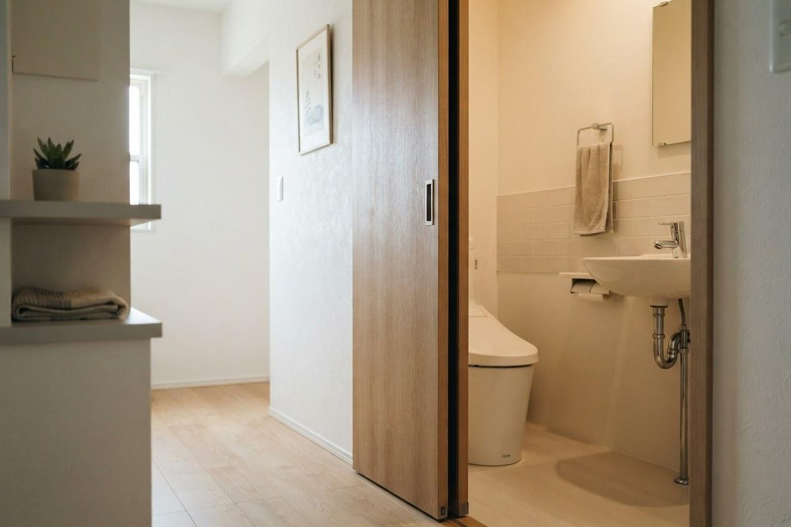

便に血が混じっていました。痔だと思うのですが、受診は必要ですか？
A. 回答血便の原因として痔は多いとされていますが、「痔だから大丈夫」と自己判断で様子を見ることはおすすめできません。痔と大腸の病気は同じ方に併存することがあり、出血の色や量だけで原因を見分けることは難しいと考えられているためです。とくに健診・人間ドックの便潜血検査で陽性を指摘された場合は、症状がなくても大腸内視鏡検査（大腸カメラ）などの精密検査を受けることがすすめられています。血便は消化器内科（胃腸科）でご相談いただける症状です。

便に血が混じるときの一般的な原因
血便・便潜血陽性の背景には、次のような原因が挙げられます。いずれも検査をしてみないと区別がつかないことが多いとされています。
- 痔（いぼ痔・切れ痔）：肛門付近からの出血で、便の表面に付いたり、紙に鮮やかな赤い血が付いたりすることが多いとされています。頻度の高い原因ですが、これだけで説明がつくとは限りません。
- 大腸ポリープ：大腸の粘膜にできる隆起で、多くは自覚症状がなく、出血で気づかれることがあります。放置すると大きくなり、一部はがんに進むことがあるとされています。
- 大腸がん：早い段階では症状が乏しいことが多く、便潜血検査での出血が唯一の手がかりになる場合があります。痛みを伴わないことも少なくないとされています。
- 大腸の炎症（大腸炎など）：腹痛や下痢を伴って、粘液の混じった血便が出ることがあります。
- 胃・十二指腸からの出血：黒くドロっとした便（タール便）として現れることがあり、上部消化管の病気が背景にある場合もあります。
受診の目安
血便は「量が少ないから軽い」とは限りません。以下を目安にご検討ください。
判断に迷われるときは、救急安心センター事業「＃7119」（岡山県内で利用できます）にご相談いただけます。総務省消防庁の「全国版救急受診アプリ（Q助）」も目安になります。
すぐに受診を検討してください
- 大量の出血がある、便器が赤く染まるほどの出血がくり返し続く
- 出血に加えてふらつき・立ちくらみ・めまいがある、動悸・冷や汗・強い倦怠感・顔面蒼白を伴う
- 黒くドロっとした便（タール便）が出た、または吐血した
- 強い腹痛や高熱を伴う
- 血をサラサラにする薬を飲んでいて、出血が止まらない
出血量が多いときや、ふらつき・冷や汗を伴うときは、体内で急な出血が起きている可能性があります。立ち上がれない、意識がもうろうとするといった場合は迷わず救急要請（119番）を、診療時間外であれば救急外来の受診もご検討ください。
早めの受診をおすすめします
- 健診・人間ドックの便潜血検査で陽性を指摘された（2日法のうち1回だけの陽性でも精密検査がすすめられています）
- 痔と言われたことがあるが、出血が繰り返す・以前と様子が違う
- 便が細くなった、便秘と下痢を繰り返すなど便通の変化がある
- 体重が減ってきた、貧血を指摘された
- 40歳以上で大腸の検査を受けたことがない、ご家族に大腸の病気の方がいる
- 少量でも血が付く状態が数週間以上続いている
「痔だと思って様子を見る」ことのリスク
痔をお持ちの方でも、その出血がすべて痔によるものとは限りません。痔と大腸ポリープ・大腸がんは同じ方に併せて見つかることがあり、「以前から痔があるから」と考えて精密検査を見送った結果、後になって大腸の病気が見つかるケースもあると報告されています。過度に心配していただく必要はありませんが、原因をはっきりさせておくことが安心につながります。とくに便潜血検査は、目に見えないわずかな出血を拾い上げるための検査です。陽性となった方の多くは大腸がん以外が原因とされていますが、それは検査を受けて初めてわかることです。
当院での対応
いなだ医院は消化器内科（胃腸科）を標榜しており、血便や便潜血陽性のご相談をお受けしています。まず症状の経過や便の性状、これまでの検査歴などをうかがい、必要に応じて診察・血液検査を行います。そのうえで、大腸内視鏡検査（大腸カメラ）が必要と判断した場合には、当院で検査を実施することが可能です。当院では新世代の内視鏡システムを導入しており、胃・大腸の内視鏡検査に対応しています。検査の内容や前処置についてもご説明しますので、不安な点は遠慮なくお尋ねください。
受診時に伝えていただきたいこと
- いつから、どのくらいの頻度で血が混じっているか
- 血の色（鮮やかな赤・暗い赤・黒っぽい）と、便に混ざっているか表面に付いているか
- 排便時の痛みの有無、便通の変化（細くなった・回数が変わった など）
- 健診結果（便潜血検査の結果票をお持ちください）
- これまでに受けた大腸の検査、服用中のお薬（血をサラサラにする薬の有無を含む）
参考にした情報
血便が出た方、健診で便潜血陽性を指摘された方は、そのままにせずご相談ください。
最終更新：2026年8月26日